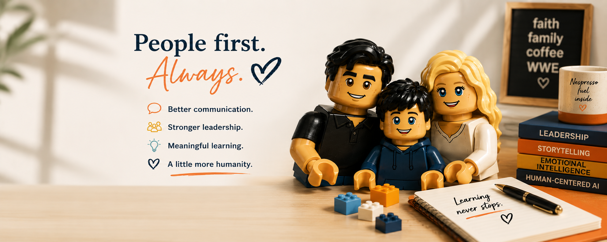

Our Story
About BryX Studio
Long before BryX Studio became a business, it was a shared belief that every person has something worth sharing. Throughout our careers in radio, television, public relations, training, and education, we've been drawn to the same thing - people and their stories. We love listening to them, learning from them, and helping others find the confidence to share them.
BryX Studio grew from that passion. Through storytelling, content creation, podcasting, and hands-on experiences, we help people build confidence in their voice and share what makes them unique.
We believe stories create connection, and that some of the most meaninful ones are hidden in everyday experiences, waiting for someone to recognize their value.

How We Help
- Communication & Confidence Development
- Storytelling & Brand Messaging
- Podcasting & Content Creation
- Experiential Learning & Workshops
Meet the Founders
Bryana Larimer
Co-Founder & Storytelling StrategistBryana brings experience in journalism, public relations, leadership development, training, and education. She specializes in storytelling, communication, facilitation, presentation skills, and helping individuals and teams communicate with confidence and authenticity.
Dennis Larimer
Co-Founder & Media ProducerDennis brings more than 30 years of experience in radio, media production, and broadcasting. He supports podcast production, content development, audio storytelling, and creative strategy.
A Warm Welcome from a Founding Member
Take BryX With You
Download our one-page overview to learn more about BryX Studio and the services we offer.
Download the BryX Studio Guide